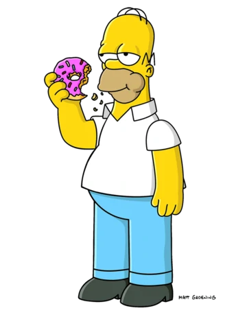
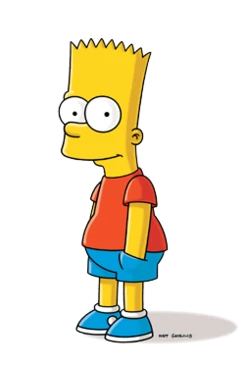

СІМПСОНИ

Мультсеріал — сатирична пародія на стиль життя середнього класу США, втілена в сім'ї Сімпсонів, яка складається з Гомера, Мардж, Барта, Ліси та Меґґі. Більшість подій відбуваються у вигаданому містечку Спрингфілді (англ. Springfield). Шоу висміює численні аспекти життя людей, американську культуру, суспільство, навіть американське телебачення.

Гомер Джей Сімпсон (англ. Homer Jay Simpson) — один із головних героїв мультсеріалу «Сімпсони».Гомер — грубий і неввічливий батько родини, він має очевидні вади: товстий, лисий і не дуже розумний. Нерідко він поводиться як блазень, абсурдно, егоїстично і нетактовно, але все ж лишається симпатичним.
Гомер має трьох дітей: Барта, Лісу і Меґґі. Працює на Спрингфілдській атомній електростанції інспектором з безпеки. Гомер дуже лінивий і багато п'є.
Вага — 109-122 кг, вік — 38-39 років, зріст — 1 м 83 см. Правша. Атеїст (хоча іноді відбріхується що він віруючий).
"До'у"
"Діти як макаки. Шуму багато – толку мало"
"Будь щедріше в ліжку. Поділися бутербродом"

Бартоломью ДжоДжо "Барт" Сімпсон — тритагоніст серії. Він неслухняна, бунтівна і "потенційно небезпечна" старша дитина Гомера і Мардж Сімпсонів, старший брат Лізи й Меґґі. Прообразом Барта є старший брат Метта Ґрейнінґа, Марк.Невгамовний шибеник, Барт своїми витівками, часом переходячими можливі й неможливі межі, доставляє чимало проблем оточуючим буквально з пелюшок. Через десять хвилин після народження він вже встиг підпалити батькову краватку. Барт — дитина незапланована, під час неумисного зачаття Гомер знаходився в стані алкогольного сп'яніння, а в період вагітності Мардж випадкового скуштувала шапанське. Ймовірно, через ці фактори дитина не може похвалитися своїми розумовими здібностями.
"Поцілуй мене в шорти"
"Ай, карамбо!
"Тикання палицею в мертвого єнота — не наука!"
 Ліса — надзвичайно розумна восьмирічна дівчинка, одина з найрозумніших у серіалі (за даними різних серій її IQ становить 156 чи 159). Феміністка. Грає на саксофоні. Полюбляє дивитися мультфільм «Чух і Сверблячка» разом з сім'єю.Знання Ліси охоплюють широке коло галузей, від астрономії до медицини, і більше зосереджені на світових справах, ніж на повсякденному житті. Інтелект і особиста успішність Ліси є характерною рисою, притаманною жіночій лінії родини Сімпсонів (див. серію «Ліса з роду Сімпсонів», в якій пояснюється, що ген, присутній в Y-хромосомі Сімпсонів-чоловіків, гальмує їхній інтелектуальний розвиток). Ліса також високо цінує власну моральність
"Якщо знадоблюся, я буду у своїй кімнаті…"
Ліса — надзвичайно розумна восьмирічна дівчинка, одина з найрозумніших у серіалі (за даними різних серій її IQ становить 156 чи 159). Феміністка. Грає на саксофоні. Полюбляє дивитися мультфільм «Чух і Сверблячка» разом з сім'єю.Знання Ліси охоплюють широке коло галузей, від астрономії до медицини, і більше зосереджені на світових справах, ніж на повсякденному житті. Інтелект і особиста успішність Ліси є характерною рисою, притаманною жіночій лінії родини Сімпсонів (див. серію «Ліса з роду Сімпсонів», в якій пояснюється, що ген, присутній в Y-хромосомі Сімпсонів-чоловіків, гальмує їхній інтелектуальний розвиток). Ліса також високо цінує власну моральність
"Якщо знадоблюся, я буду у своїй кімнаті…"